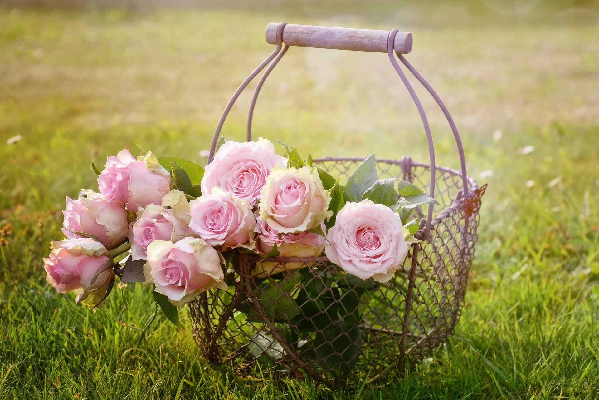

Przypadek
Pierwszy bardzo prozaiczny- przypadek. Tak się dziwnie poukładało w moim życiu, że dawno temu , chcąc podratować studencki budżet trafiłem do firmy w Niemczech, która zajmowała się uprawą tych krzewów. Taki był początek.
Z różami związany jestem prawie 30 lat. Na przestrzeni tego czasu miałem możliwość poznać wiele odmian. Dzisiaj chciałbym się podzielić moim doświadczeniem z Państwem. Wybiorę i zaprezentuję kilkadziesiąt sortów, pod którymi podpiszę się zarówno ja, jak i większość osób zajmujących się uprawą tych roślin. Krzewy pochodzą z dużej szkółki w Niemczech (zostały przywiezione do Polski jesienią zeszłego roku). Spośród szepionych tam ponad 450 odmian wybrałem te, których głównym atutem były: walory dekoracyjne, zdrowotność, odporność na przemarzanie, a czasem ułamek sekundy zamknięty z ostatnim promieniem lipcowego słońca, na płatkach np. Sebastiana Kneippa. Róże są dobrze zabezpieczone do transportu, nie wymagają natychmiastowego posadzenia w ogrodzie. Korzeń jest obłożony wilgotnym torfem. Każda sadzonka posiada oryginalną etykietę.
Powodów jest kilka:
Pierwszy bardzo prozaiczny- przypadek. Tak się dziwnie poukładało w moim życiu, że dawno temu , chcąc podratować studencki budżet trafiłem do firmy w Niemczech, która zajmowała się uprawą tych krzewów. Taki był początek.

Powód drugi był, że tak określę matematyczny. W pewnym momencie uświadomiłem sobie ogrom odmian już istniejących i ilości możliwych kombinacji w poszukiwaniu kolejnych, jeszcze nie odkrytych. Ta potencjalna nieograniczoność tego zbioru wyprowadziła mnie z małego różanego ogródka mojej babci, który znałem prosto na ogromne morze. Zapragnąłem dotykać tej nieskończoności. Podobnie czuje się gracz w warcaby, kiedy osiągnie już poziom, gdy wszystko jest przewidywalne- widzi grę jako całość. Ulatnia się jej tajemnica, gra jest skończona. I wtedy szuka czegoś innego- szachów. W tym momencie rodziła się moja fascynacja.
Powód trzeci jest bardzo osobisty. Myślę, że jest we mnie jakaś genetycznie ukształtowana siła, która sprawia, że gdy wiosenne słońce zaczyna mocniej świecić, pragnę wyjść w pole, stanąć czołem do wiosennego wiatru i śmiać się wraz z ukłuciami promieni słońca na twarzy . Moi bardzo dalecy przodkowie na pewno byli ogrodnikami.
I ten czwarty- najważniejszy- pasja. Czasem myślę, że ujmując skrótowo, to prawie wszystkie odmiany róż (prawie - bo wyjątki muszą być aby potwierdzały regułę) dostały od natury po równo. Wytłumaczę. Gdy widzę skromny pięciopłatkowy kwiat, powiedzmy Stadt Rom myślę sobie, że w miejsce "brakującej" większej liczby płatków odmiana ta musi mieć inne cechy, które nadrobią ten brak. Nie potrzeba dużo czasu, bo wystarczy jeden sezon, aby spojrzeć na Stadt Rom zupełnie inaczej -dostrzec w niej odmianę rewelacyjną ze względu na powtarzalność kwitnienia, odporność i trwałość kwiatów, którym nie szkodzą upały ani deszcz. Ten skromny pięciopłatkowy różowy kwiat stał się moim hitem importowym dla znajomych i przyjaciół. Proszę mi uwierzyć, nikt z obdarowanych nie był zawiedziony- choć to przecież tylko pięć płatków. W ten sposób nauczyłem się, że nie należy oceniać i odrzucać odmian po pierwszym spotkaniu. Proszę spróbować takiego podejścia, a przyznają mi Państwo rację. Od takiego spojrzenia na róże niedaleko jest do podobnego "potraktowania" nowo poznanych osób. Może każdy z nas też dostał po równo- tylko trzeba to chcieć zobaczyć w drugim człowieku .

Sidonie uważana jest przez wielu hodowców, za jedną z najlepszych róż historycznych - podzielam tę opinię, i dlatego jest w mojej ofercie. Należy do grupy róż powstałych we Francji w połowie XIX wieku, zwanych remontantkami (krzew nie jest w kształcie trójkąta, lecz kuli). Jak cała grupa, tak i Sidonie charakteryzuje się bardzo gęstą zabudową krzewów, odpornością na choroby i bardzo mocnym zapachem kwiatów. Powtarza kwitnienie. Nie wymaga żadnych szczególnych warunków.
Cena: 15,00 zł
Zamów
Piękne duże kwiaty. Intensywny zapach. Gęste, zdrowe liście. Wyróżnienie certyfikatem jakości ADR. Wysoka odporność na mróz i choroby. Wymienione cechy sprawiają, że Schloss Ippenburg skupia najbardziej pożądane atrybuty, zarówno dla odmian typowo na kwiat cięty, jak i odmian dekoracyjnych w ogrodzie. Niedużo się pomylę mówiąc, że ponad 90 procent przypadków róż kwiaciarnianych, nie nadaje się do gruntu. Schloss Ippenburg jest wyjątkiem, potwierdzającym tę regułę. Wysokość ok. 1 metra. Odmiana pochodzi od Meillanda z 2006 roku.
Cena: 22,00 zł
ZamówDługo, wśród różowych odmian pnących nie pojawiła się róża, która mogłaby dorównać Eden Rose. Dopiero w roku 2007 roku udało się w szkółce Tantau’a zarejestrować odmianę, która według mnie, pod pewnymi względami, przewyższa Eden Rose. Bardzo rzadko spotykany wśród nowoczesnych róż intensywny malinowy zapach, bardziej witalny pokrój krzewów oraz odporność na choroby i warunki atmosferyczne. Uzyskanie 5 gwiazdek, w pięciostopniowej skali, foruje tę odmianę. Giardina to odmiana pnąca 2.5 - 3 metrów. Rzeczywisty kształt i kolor kwiatu jak na zdjęciu.
Cena: 15,00 zł
Zamów
Odmiana ta należy do grupy róż stosunkowo młodych, które dzięki szczególnym cechom mogły zaistnieć wśród setek istniejących już odmian. Co więcej w 2006 roku, w Osace na Konwencji Róż została ona wpisana na listę ”Róża Świata” przez World Rose Hall of Fame Winners, co jest najwyższym wyróżnieniem odmiany, a zarazem jedyną furtką na „salony” nieeuropejskie. Eden Rose powstała w „stajni” Meillanda w 1985 roku i jest zaliczana do róż krzaczastych (chociaż może być również prowadzona jako pnąca). Jej popularność wśród miłośników róż sprawiła, że w 2002 roku Meilland stworzył identyczną odmianę, tylko że karminowo czerwoną - Red Eden Rose. Kolor i kształt kwiatów jak na zdjęciach. Wysokość do 2.5 metra. Zapach delikatny. Proszę mi uwierzyć - nikt nie przejdzie obojętnie obok bukietu Eden Rose we flakonie na niedzielnym stole.
Cena: 17,00 zł
Zamów